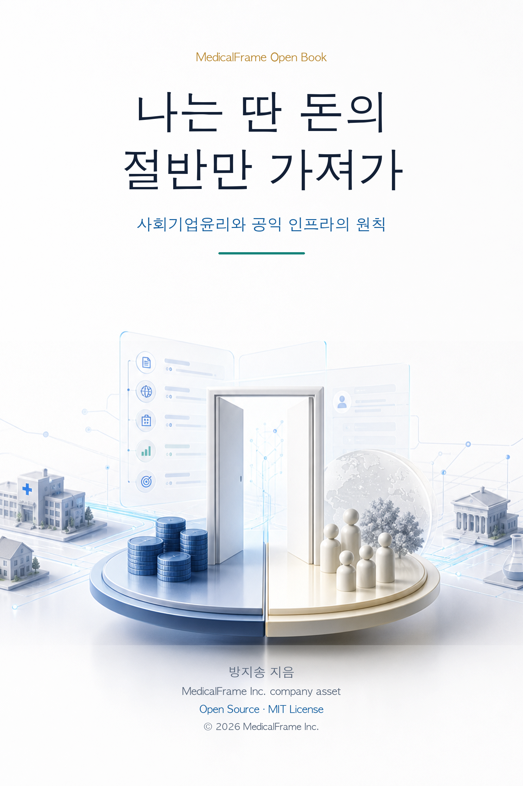

기업은 사회 밖에서 돈을 벌지 않는다
도로, 통신망, 교육, 병원, 법률, 연구 생태계 위에서 돈을 버는 회사는 그 기반을 다시 살리는 방식으로 운영되어야 한다.
EMR을 바꾸지 않고, EMR 위의 일을 바꾼다.
사회기업윤리, OpenFrame, HyperFrame Suite, AI EMR PoC를 하나의 실행 구조로 묶는 MedicalFrame의 새 책입니다.
MedicalFrame Inc. company asset · Open Source MIT License

도로, 통신망, 교육, 병원, 법률, 연구 생태계 위에서 돈을 버는 회사는 그 기반을 다시 살리는 방식으로 운영되어야 한다.
돈 있는 곳에서 정당하게 벌고, 돈 없는 곳에는 시스템과 지식을 나누는 접근성 정책이 필요하다.
이익의 전부를 가져가는 대신 팀, 현장, 공익사업, 다음 시스템의 설치비로 다시 흘려보낸다.
HyperFrame은 EMR을 갈아엎는 제품이 아니다. 공식 기록 원장은 기존 EMR에 두고, 반복되는 진료·연구·문서 업무를 옆에서 줄인다.
말, 텍스트, 버튼으로 EMR 업무를 지시하는 command layer.
기존 EMR 옆에 켜지는 AI clinical cockpit.
병원 문서, FAQ, 지침, 연구자료 기반 RAG.
연구 변수 추출, IRB 문서, CSV/JSONL/SQL export.
비식별화, 문서 정리, 텍스트 클리닝.
EMR, API, MCP, CLI, export를 연결하는 integration layer.
오픈소스는 신뢰와 검증 가능성을 만들고, 유료 운영은 보안, 연동, SLA, 병원별 workflow customization의 책임을 감당한다.
GitHub 공개, OpenEMR demo, synthetic data, local install.
문서 RAG, 환자 답장 초안, SOAP 초안, 연구 변수 추출, 비식별화.
특정 진료과/센터 PoC, audit log, 사용자 계정, KIS/export/API 연동 검토.
정식 connector, private inference, RBAC, 보안 검토, SLA, 병원별 구축.
HyperClick demo와 OpenEMR 기반 공개 시연 화면을 만든다.
public release, 3분 데모 영상, architecture note를 공개한다.
병원/센터 PoC에서 SOAP 초안, 환자 문의, 연구 변수 추출을 검증한다.
기업은 사회 밖에서 살 수 없다
나는 딴 돈의 절반만 가져가
의료, 교육, 연구는 모두의 것이다
Medical Frame과 OpenFrame 모델
AI EMR 선언
무료 배포는 마케팅이 아니라 실증이다
방해와 저항을 다루는 법
절반만 가져가는 회사의 운영 원칙
새로운 기업윤리 선언
나머지 절반은 다음 판을 고치는 데 쓴다.